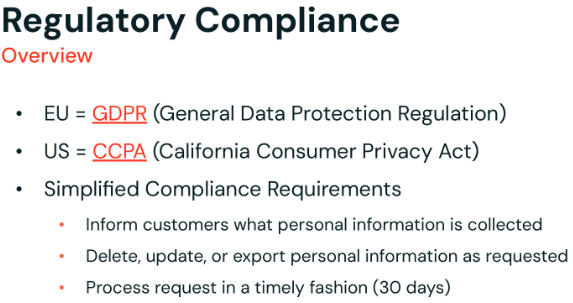

Section 7 · Governance and Security · Quelle: Kurs 6, Regulatory Compliance & DP 1.3
Die vorherigen Kapitel dieses Themenordners haben die technischen Bausteine behandelt – ACLs, Row Filters, Pseudonymisierung, Change Data Feed. Dieses Kapitel führt zusammen, welche regulatorischen Anforderungen dahinterstehen und worauf beim tatsächlichen, physischen Löschen von Daten in einem Lakehouse besonders zu achten ist. Denn ein DELETE-Statement allein reicht bei personenbezogenen Daten oft nicht aus, um eine Löschanfrage rechtlich vollständig zu erfüllen.
Die europäische DSGVO (Datenschutz-Grundverordnung) und der kalifornische CCPA (California Consumer Privacy Act) sind die beiden einflussreichsten Datenschutzregelwerke, an denen sich international tätige Unternehmen orientieren. Beide verlangen im Kern, dass Unternehmen personenbezogene Daten zu einer Person identifizieren und auf Anfrage exportieren, korrigieren oder löschen können – und das innerhalb klar definierter Fristen.

| Regelwerk | Bearbeitungsfrist | Sanktionen bei Verstoß |
|---|---|---|
| DSGVO (EU) | i. d. R. 30 Tage | bis zu 4 % des Jahresumsatzes oder 20 Mio. € (was höher ist) |
| CCPA (Kalifornien) | Eingangsbestätigung innerhalb 10 Werktagen, Bearbeitung innerhalb 45 Tagen | bis zu 2.500 $ je Verstoß, 750 $ je Verbraucher und Vorfall |
Da sich die Detailanforderungen beider Regelwerke unterscheiden, viele Unternehmen aber sowohl in der EU als auch in Kalifornien tätig sind, empfiehlt sich eine einzige, konservative Policy, die beide Anforderungen gleichzeitig erfüllt. Delta Lake und die Lakehouse-Architektur helfen dabei strukturell: Durch ACID-Transaktionsgarantien und Schema-Durchsetzung wird verhindert, dass PII unbemerkt durch Schema-Abweichungen oder fehlgeschlagene Jobs im System verstreut bleibt, und Änderungen an Tabellenhistorie und Change Data Feed (siehe Kapitel 05-4) schaffen die Nachvollziehbarkeit, die Audits verlangen.
Delta Lake löscht Zeilen nicht, indem vorhandene Dateien verändert werden – stattdessen werden neue Datendateien ohne die gelöschten Zeilen geschrieben, während die alten Dateien und Tabellenversionen zunächst erhalten bleiben. Das ist die Grundlage für Time Travel und Rollbacks, hat aber eine wichtige Konsequenz für Löschanfragen: Nach einem DELETE sind die betroffenen Zeilen zwar aus der aktuellen Version verschwunden, in älteren Versionen der Tabelle aber weiterhin abrufbar.
-- Aktuelle Version: geloeschte Nutzer sind nicht mehr enthalten SELECT count(*) AS TotalRows FROM gold_users; -- z.B. 3.387 Zeilen -- Aeltere Version (vor dem DELETE): geloeschte Nutzer sind weiterhin sichtbar! SELECT count(*) AS TotalRows FROM gold_users VERSION AS OF 0; -- z.B. 3.407 Zeilen -- inklusive der 20 "geloeschten" Nutzer
Für eine DSGVO-konforme Löschung reicht ein DELETE also nicht aus – die alten Dateiversionen müssen zusätzlich physisch entfernt werden.
Der Befehl VACUUM entfernt Datendateien, die von keiner aktuell referenzierten Tabellenversion mehr benötigt werden und älter sind als die konfigurierte Aufbewahrungsfrist (Standard: 7 Tage). Erst nach einem erfolgreichen VACUUM sind die Rohdaten wirklich aus dem Cloud-Speicher entfernt.
-- Standard-VACUUM: entfernt Dateien aelter als 7 Tage (Default-Schutzschwelle) VACUUM gold_users; -- Fuer eine sofortige, vollstaendige Loeschung (z.B. akute DSGVO-Anfrage): -- 1. Sicherheitscheck der 7-Tage-Mindestfrist deaktivieren SET spark.databricks.delta.retentionDurationCheck.enabled = false; -- 2. Trockenlauf: welche Dateien wuerden geloescht? (nichts wird tatsaechlich entfernt) VACUUM gold_users RETAIN 0 HOURS DRY RUN; -- 3. Tatsaechliches, sofortiges physisches Loeschen VACUUM gold_users RETAIN 0 HOURS;
Wichtig: Auch der Change Data Feed folgt derselben Aufbewahrungsfrist wie die Tabellenhistorie – erst mit VACUUM werden auch die zugehörigen CDF-Änderungsdateien entfernt. Wer also über CDF Löschungen propagiert (Kapitel 05-4), muss zusätzlich sicherstellen, dass die Quelltabelle regelmäßig vacuumed wird, damit gelöschte PII nicht dauerhaft in alten CDF-Dateien liegen bleibt. Aus Effizienzgründen empfiehlt es sich außerdem, Löschungen möglichst an Partitionsgrenzen auszurichten – dann können ganze Partitionen entfernt werden, statt einzelne Zeilen aus großen Dateien neu zu schreiben.
Bei Tabellen mit aktivierten Deletion Vectors (einer Performance-Optimierung, die gelöschte Zeilen zunächst nur markiert statt Dateien sofort neu zu schreiben) reicht VACUUM allein nicht aus, um wirklich alle referenzierten Datensätze physisch zu entfernen. Zusätzlich ist ein REORG TABLE ... APPLY (PURGE) nötig, das die markierten Zeilen endgültig aus den zugrunde liegenden Dateien entfernt, bevor die alten Dateiversionen per VACUUM gelöscht werden können.
REORG TABLE gold_users APPLY (PURGE); VACUUM gold_users RETAIN 0 HOURS;
Nicht jedes Zielobjekt in einer deklarativen Pipeline lässt sich beliebig per DELETE/UPDATE bearbeiten:
DELETE/UPDATE-Statements sind mit dem inkrementellen Verarbeitungsmodell nur eingeschränkt vereinbar. Für strukturierte Änderungspropagierung wird stattdessen AUTO CDC INTO (vormals APPLY CHANGES INTO) verwendet. Für das dauerhafte, gezielte Löschen einzelner Nutzer aus einer Streaming Table lässt sich in Lakeflow Declarative Pipelines eine konfigurierbare Aufbewahrungsfrist bzw. ein Pipeline-Reset einsetzen, um die Tabelle kontrolliert neu aufzubauen.INSERT, UPDATE oder DELETE zu – ihr Inhalt ist stets das Ergebnis der letzten REFRESH-Berechnung. Eine Löschung in einer darunterliegenden Quelltabelle wird erst nach dem nächsten (vollständigen oder inkrementellen) Refresh der Materialized View sichtbar.Für produktive GDPR-Workflows bedeutet das: Löschungen werden auf der (Streaming-)Bronze- oder Silver-Ebene angestoßen und über CDF in nachgelagerte Tabellen propagiert (siehe Kapitel 05-4); Materialized Views in der Gold-Schicht aktualisieren sich dabei automatisch über ihren nächsten Refresh-Zyklus mit.
VACUUM-Lauf diese physisch aus dem Cloud-Speicher entfernt – ein Standard-VACUUM reduziert dabei die Time-Travel-Fähigkeit auf die konfigurierte Aufbewahrungsfrist (Default 7 Tage, konfigurierbar). Für Tabellen mit aktivierten Deletion Vectors wird zusätzlich REORG TABLE ... APPLY (PURGE) benötigt, um bereits als gelöscht markierte Datensätze endgültig aus den zugrunde liegenden Dateien zu entfernen, bevor VACUUM sie physisch löschen kann.